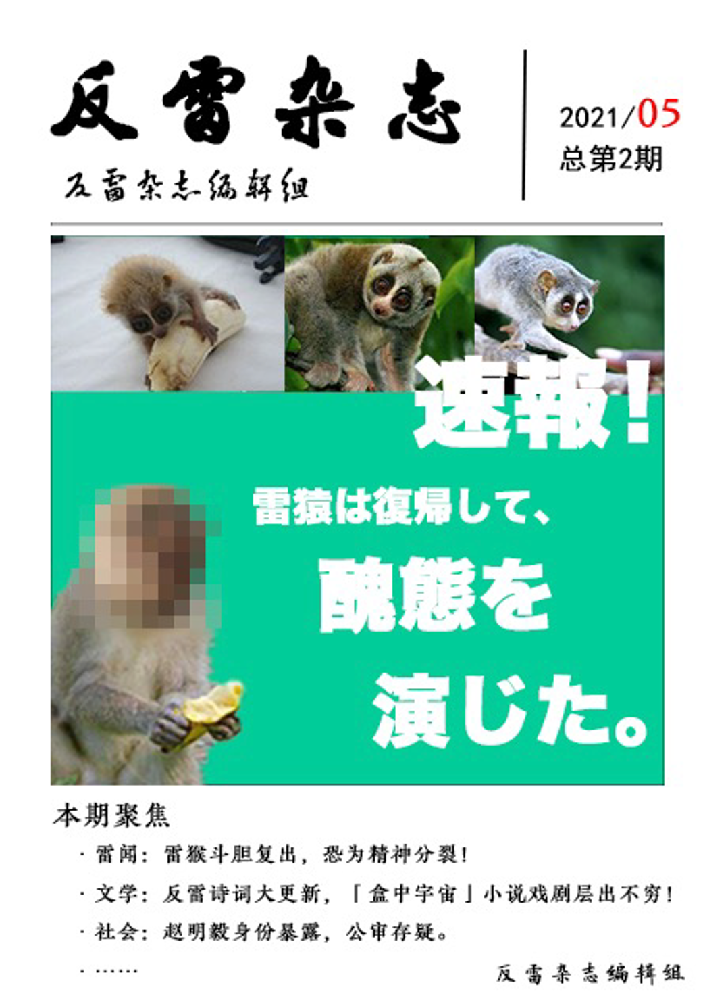
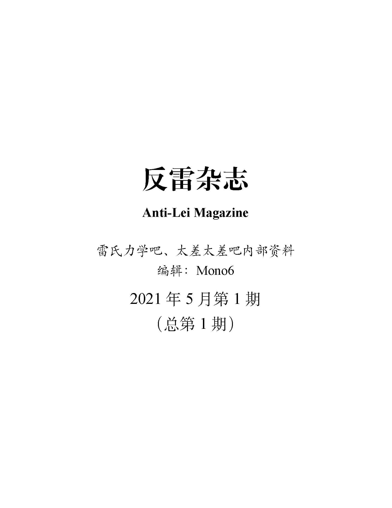

反雷杂志第 3 期（反雷古代文学专刊）本期聚焦：· 赵明毅《山坡羊·反雷》系列二十七首，另有《扇泼猴》若干首· 反雷对联二十四副 发刊日期：2021-06-05；正文页数：47 |
在线阅读：本功能暂未开放下载：源文件 (360 KB) PDF (1.9 MB) |
|  |
反雷杂志第 2 期本期聚焦：· 赵明毅身份暴露，公审存疑 · 雷绍武活跃程度加强，恐为精神分裂 · 反雷诗词新增 55 首，另有大量雷氏宇宙文学作品涌现发刊日期：2021-05-10；正文页数：75 |
在线阅读：本功能暂未开放下载：源文件 (3.1 MB) PDF (3.0 MB) |
|  |
反雷杂志第 1 期本期聚焦：· 《反雷杂志》正式发刊 · 《反雷集》最初的 20 首完整收录 · 自封十天后雷绍武发贴攻击雷吧，随后即遭到封禁 · “雷电杯”比赛成功举办，完整试题收录发刊日期：2021-04-30；正文页数：36 |
在线阅读：本功能暂未开放下载：源文件 (44 KB) PDF (1.1 MB) |